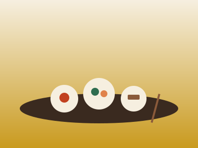
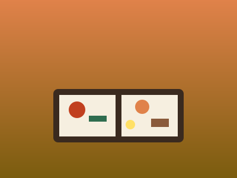
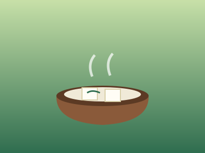
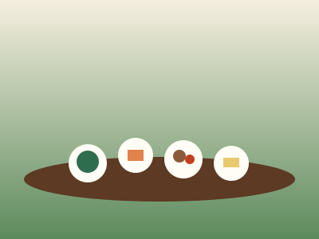
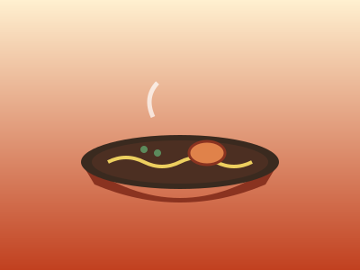
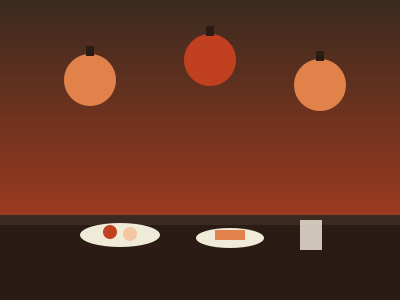

京料理・湯豆腐・抹茶スイーツ・京都ラーメンまで。旅の楽しみ「食」をジャンル別に厳選して紹介します。

東山季節の食材を活かした会席料理を、数寄屋造りの落ち着いた空間でいただく。記念日や特別な日のディナーに人気。

洛中夜の会席よりも手頃な価格で楽しめるランチ懐石。京町家を改装した趣ある空間も観光の思い出になる。

東山名水を使った滋味深い湯豆腐が名物。境内の緑を望む座敷でいただく一椀は、京都らしいひとときを演出する。

嵐山肉や魚を使わず、旬の野菜と豆腐を中心に仕立てた精進料理。禅の思想に触れながら体にやさしい食事を味わえる。
濃厚な抹茶アイスやわらび餅、白玉が層になった抹茶パフェは宇治観光の締めくくりに人気。行列ができる名店も多い。
茶筅で点てる本格的な抹茶と季節の和菓子をいただける町家カフェ。畳の座敷でほっとひと息つける。

京都駅背脂の効いた濃厚醤油スープが特徴の京都ラーメン。京都駅ビルには複数の人気店が集まるフロアもあり食べ比べに便利。
濃厚系だけでなく、鶏や魚介であっさり仕立てたラーメンも京都の隠れた人気ジャンル。地元客で賑わう名店が点在する。

先斗町九条ねぎや万願寺唐辛子など京野菜を使ったおばんざいを、地酒とともに楽しめる。細い路地に提灯が並ぶ夜の散策も魅力。
夏は「納涼床」でも知られる鴨川沿いのエリア（2026年の鴨川納涼床は5月1日〜10月15日。9月末で終える店舗もある）。京町家を改装した居酒屋が多く、日本酒の飲み比べも楽しめる。
出汁巻き卵の串、湯葉、京漬物の食べ比べなど、東西約390mのアーケードを歩きながら少しずつ楽しめる。
楽天トラベル・じゃらん・Skyscannerを横断比較して、お得な京都行きチケットを探しましょう。